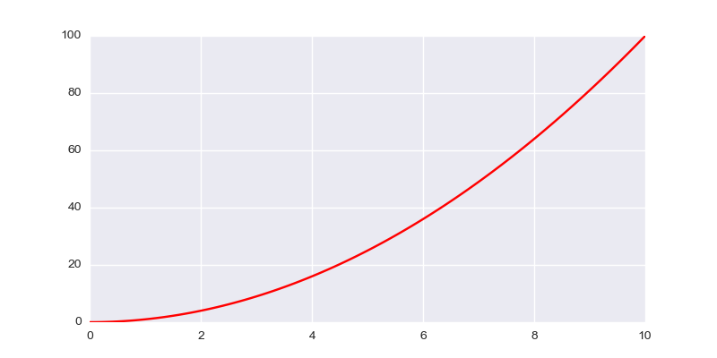
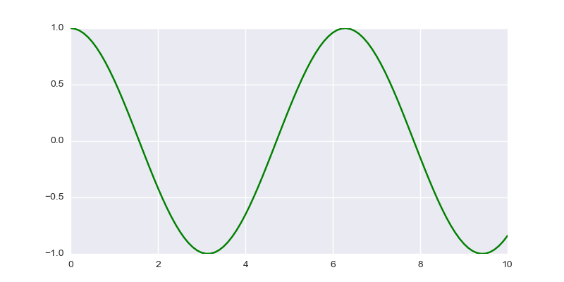

Introduction to literate.py
| Authors: | Enrico Giampieri |
|---|
Contents
Intro
Literate.py is a simple python library that is used to compile normal python script into scienfic reports, with an approach similar to that commonly refered as literate programming.
Literate.py is based on a simple idea: the isolated string in your program get turned into the text of the report, while the code is reported as evidenced. The usage of long strings in python allows to write the text in a comfortable way. The syntax used to parse the text is the ReStructured Text, the language of markup chosen for the python documentation.
Any output from the code is captured and printed in the report as verbatim. It also tries its best to capture and insert any figure created with matplotlib and pylab.
The output is properly formatted as ReStructured Text, including math:
print("capture this line!")
capture this line!
The library execute the script as the main script, and it does transmit the parameters given from the command line.
This script has been compiled as:
python literate.py introduction.py -nope
the script will execute as it was launched with:
python introduction.py -nope
import sys
if __name__ == '__main__': print("this is inside the main loop") print(sys.argv)
this is inside the main loop ['/home/PERSONALE/enrico.giampieri2/progetti/literate.py/introduction.py']
note that each block of code is represented with a different gray line. This is meant to help understand the relationships between the different lines and how they are executed together.
print(1)
1
print(2)
2
if you need to insert a string literally, you can just put a semicolon ; at the end of it. It is equivalnt from the syntax point of view, but it will not be recognized as a piece of documentation.
"""this is a regular string, not a formatted one """;
the library should be able to distinguish regulare output (stdout) and error output (stderr) and represent them accordingly
print("capture this line!", file=sys.stderr)
Warning
capture this line!
It does not catch exceptions. Your code is supposed to work correctly. If your code run, then it should be compiled without any problems. Debugging an error from the sandboxed code it extremely hard, so to discourage the practice it raises the exception without any filtering, only with a reference to the code source that generate the error.
Docstrings
the proper docstrings of functions or classes are included in the code and then rendered afterward. this will allow the system to maintain the same properties of the code while showing the correct formatted docstrings.
def my_fun(): """this function does nothing, but has the interesting math property: .. math:: |x| * 0 = |x*0| """ def my_fun2(): """nested functions and docstring are handled without problems """ pass return my_fun2
Note
def my_fun():
this function does nothing, but has the interesting math property:
Note
def my_fun2():
nested functions and docstring are handled without problems
Pylab
it can also capture matplotlib figures on the fly, maintaining all the configurazione in the appropriate way
import pylab
fig, ax = pylab.subplots(1, 1, figsize=(8, 4))
x = pylab.linspace(0, 10, 101)
ax.plot(x, x**2)
fig.show()

to show the plot it is necessary to explicitly call the show method, no shortcut available!
but if you already have shown the figure (in this case the the fig.show()),
it will not appear twice
pylab.show()
if external libraries are used, they interact in the expected way
import seaborn as sns
pylab.figure()
pylab.scatter(pylab.randn(100), pylab.randn(100))
pylab.show()

multiple figures can be plotted all at the same time with a single show, as it would be expected
fig, ax = pylab.subplots(1, 1, figsize=(8, 4))
x = pylab.linspace(0, 10, 101)
ax.plot(x, x**2, color='r')
import numpy as np
fig, ax = pylab.subplots(1, 1, figsize=(8, 4))
x = pylab.linspace(0, 10, 101)
ax.plot(x, np.cos(x), color='g')
pylab.show() 